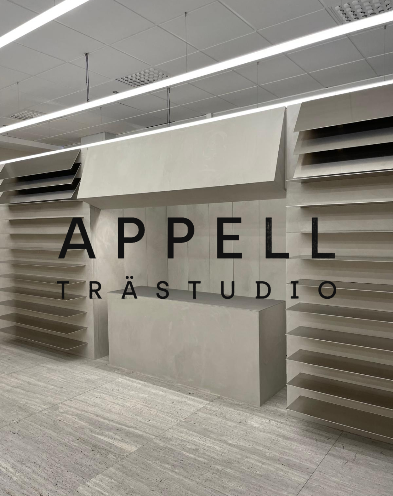
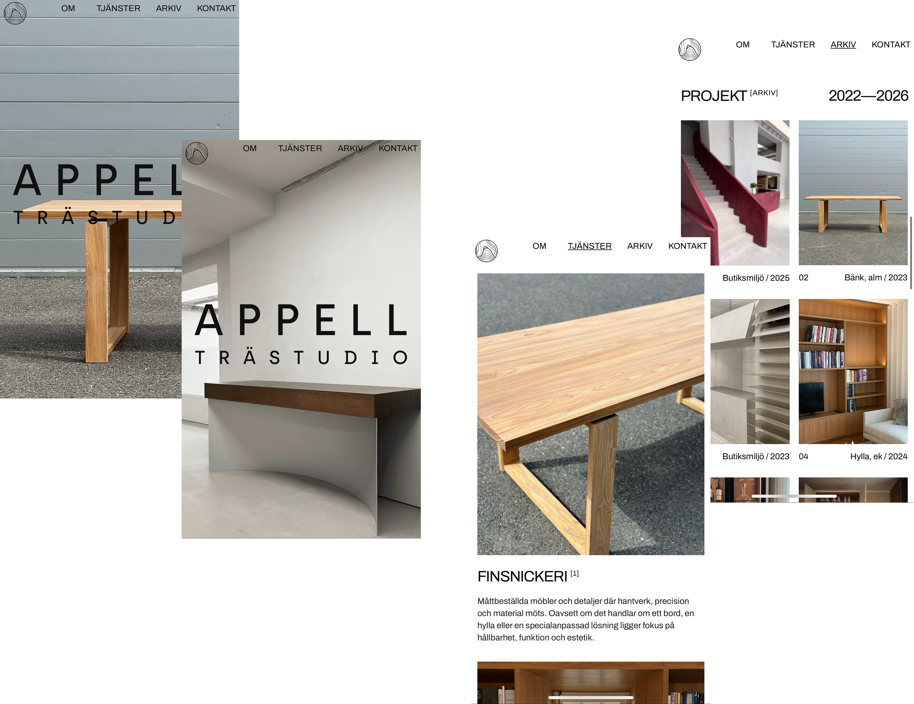
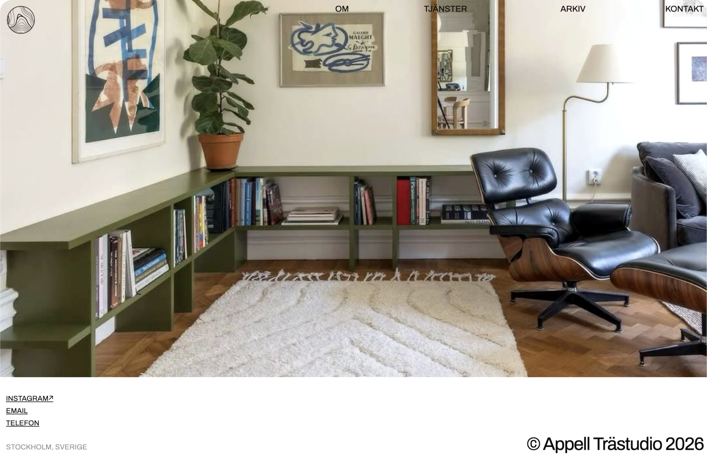

YEAR: 2025
ORG: Appell Trästudio
ROLE: Web Design & Development

Designing a digital platform for an independent woodworking studio rooted in craftsmanship
• Visual identity integration and layout direction
• Structure optimised for discovery and browsing
• Responsive front-end development with attention to accessibility and performance

The goal was to translate the tactile feels of handmade woodwork into a web experience that feels as thoughtful and refined as the studio’s output.
Working closely with the founder, I designed and built a responsive site that highlights each piece through generous spacing, detailed imagery and simple navigation. The result reflects the studio’s commitment to clarity and craft - for visitors to explore work, understand process, and connect with the maker.
